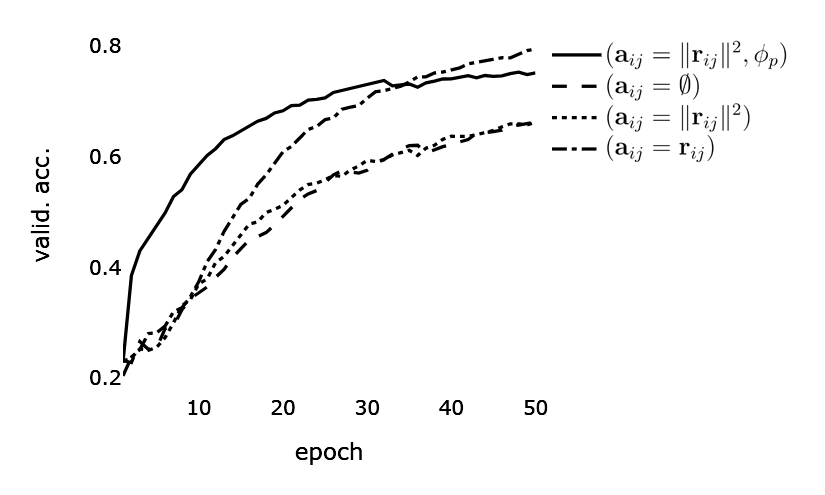

Representation Stability under 3D Rotation in Message Passing Neural Networks
Summary
This experiment examines the representation stability of graph neural networks when subjected to 3D rotation of input data.
Focusing on two leading methods, E(n) Equivariant Graph Neural Networks and Message Passing Neural Networks, we aim to discern their mechanisms in updating node features of graphs embedded in 3D space.
Using undirected graphs from the ModelNet10 dataset, the study offers a comprehensive analysis of each method's resilience and efficiency in retaining essential information amid 3D rotational perturbations.
The conclusions underscore the importance of integrating geometric relationships into edge attributes for improved representation stability.
Introduction
We are processing undirected graphs $G = (V,E)$, consisting of nodes $v_i \in V$ and edges $e_{ij} \in E$. Nodes are assigned features $\mathbf{f}_i \in \mathbb{R}^{C_v}$ and edges are assigned attributes $\mathbf{a}_{ij} \in \mathbb{R}^{C_e}$, where $C_v$ and $C_e$ stand for the cardinality of features and attributes channel, respectively. The graph is embedded in $\mathbb{R}^3$; the nodes possess position vectors $\mathbf{x}_i \in \mathbf{X}$.
We follow the methods from (A) and (B). The forward pass has two phases, a message passing phase and a readout phase.
Message passing
Consider two nodes $v_i$ and $v_j$, their latent features $\mathbf{h}_i$ and $\mathbf{h}_j$, and the attributes $\mathbf{a}_{ij}$ of the edge that connects them. We update the node features by first computing a message $\mathbf{m}_{ij}$ from $v_j$ to $v_i$.
The message function is expressed as:
$$\mathbf{m}_{i j}=\phi_m\left(\mathbf{h}_i, \mathbf{h}_j, \mathbf{a}_{i j}\right) ,$$
whereby, in Method B, the message function is extended such that, aside the edge attribute, it involves the Euclidean distance:
$$\mathbf{m}_{ij}=\phi_m(\mathbf{h}_i, \mathbf{h}_j,||\mathbf{r}_{ij}||^2, a_{i j}).$$
However, for the purposes of this experiment, we will disregard the scalar attribute $a_{i j}$.
The message update function $\phi_m$ is directly parameterised by an MLP, i.e., it does not output a matrix that is used to linearly transform the node features but directly computes messages in a nonlinear way. Thus, the messages are nonlinear transformations conditioned on the edge attribute. Note that by conditioning the messages only on the Euclidean distance in Method B, $G$-mapping is guaranteed.
Notably, Method B extends message passing such that also the node positions become updatable:
\begin{equation} \label{eq:egnn-node-pos-update}
\mathbf{x}^{\prime}_i=\mathbf{x}_i + \sum_{j\in N_i}(\mathbf{r}_{ij})\phi_p(\mathbf{m}_{ij})
\end{equation}
The position function $\phi_p$ gives a scalar which weighs the amount by which $\mathbf{x}_i$ is translated in the direction of the neighbors or in the opposite direction. This is done in a $G$-equivariant way.
Since the position function $\phi_p$ is conditioned on the distance between the node and its neighbors, $\sum_{j \in N} (\mathbf{r}_{ij})$, it is invariant; i.e., since the function gives a scalar, the attributes are invariant.
However, the method learns the weights which determine the amount of influence nodes have on each other. Due to this, it allows for more adaptation and flexibility than the basic message passing.
While both Method A and Method B preserve preserve permutation $G$-mapping on the set of nodes $V$ in the same way as standard GNNs do, Method B preserves rotation and translation $G$-mapping on the set of coordinates $\mathbf{x}_i$. Equation \ref{eq:egnn-node-pos-update} is the main difference of this method compared to standard GNNs and it is the reason why translation, rotation, and reflection $G$-mapping is preserved.
However still, the messages are obtained via invariant attributes $\|\mathbf{r}_{ij}\|^2$, which are limiting despite ensuring a $G$-map.
The next step in both methods is to aggregate the computed messages via a permutation-invariant function. Permutation invariance is needed because the way the messages are indexed, just like the way nodes are indexed, meaning the order, should not influence the results. We use sum pooling. The aggregated message
$\mathbf{m}_i = \sum_{j \in N_i} \mathbf{m}_{i j}$
is a vector that is used to obtain an updated node representation:
$$\mathbf{h}_i^{\prime}=\phi_h \left(\mathbf{h}_i, \sum_{j \in N_i} \mathbf{m}_{i j}\right) ,$$
where $\phi_h$ is a node update function imlemented as an MLP, whose input are the current node features $\mathbf{h}_i$ and the aggregated message $\mathbf{m}_i$.
Readout
We perform a graph-level classification task on the dataset. To obtain a graph-level embedding, we apply a permutation-invariant aggregation of all the nodes' features:
$$\hat{y} = \sum_{v \in V}(\{\mathbf{h}^T_v\}) ,$$
where $T$ denotes the step after the last message passing layer.
Dataset and input representation
ModelNet10 dataset contains 4,899 3D models (meshes) representing an object from 10 classes. We processed the meshes to form graphs embedded in $\mathbb{R}^3$.
Nodes form an $8\times8\times8$ regular grid. The edges are inferred by connecting nodes within a pre-set maximum radius value. The nodes are assigned one-dimensional feature vectors, representing the Euclidean distance to the closest point on the surface of the initial mesh.
The three variants of Method A pose different demands on edge attributes. In the first, edges have no attributes. In the second, Euclidean distance between connected nodes forms attributes. In the third, attributes are formed by computing relative Cartesian coordinates of connected nodes.
Each graph is assigned a one-dimensional feature vector representing the object class. We sampled 3.991 graphs for training and 908 for validation.
Training
Batch size is set to 64; the number of message-passing layers to 2; the number of hidden features to 256; and the learning rate to $3e^{-4}$. Number of epochs is set to 50. SGD uses the ADAM optimiser. Parameter total is 923 K (Method A) and 1.1 M (Method B).
Results

Training performance comparison. Method A with edge attributes $\mathbf{a}_{ij} = \emptyset$, $\mathbf{a}_{ij} = \|\mathbf{r}_{ij}\|^2$, and $\mathbf{a}_{ij} = \mathbf{r}_{ij}$. Method B with edge attributes $\mathbf{a}_{ij} = \|\mathbf{r}_{ij}\|^2$ and node position update function $\phi_p$.
Method A that does not use edge attributes ($\mathbf{a}_{ij} = \emptyset$) and therefore, it disregards any information the edges may carry, beyond connectivity. It is ignorant of the geometric structure between the nodes and its message passing scheme utilises the node feature vectors. Applying different rotations to the input graph gives the same latent representations.
Another model following the Method A has the geometric quantity of Euclidean distance injected into the edge attributes, $\mathbf{a}_{ij} = \|\mathbf{r}_{ij}\|^2$.
The representations learned with this rotation-invariant model do not change under the rotation of the input representations.
Rotation invariance stems from the norm in the edge attribute definition being invariant to rotations.
Last model following the Method A has relative Cartesian coordinates as attributes, $\mathbf{a}_{ij} = \mathbf{r}_{ij}$. Here, latent representations show instability under rotation. The definition of edge attribute here as the distance between two nodes, $\mathbf{r}_{ij}$, does guarantee translation but not rotation $G$-mapping. See Figure for a visualisation.
Hidden representations of the model before pooling, using relative Cartesian coordinates as edge attributes. The disk radius reflects the first node feature value. For the input representation, 1,500 points per 3D model randomly sampled from the embedding space $\mathbb{R}^3$. Two scenarios are shown: (left) with an applied rotation of $ \theta = 0^{\circ} $ and (right) with $ \theta = 180^{\circ} $. The input representation for this visualisation differs from the others in the experiment solely in the pre-processing involving random sampling.
Next, we compare Method B with the three variants of Method A, presented in the Table. Method B is outperformed only by Method A variant with relative Cartesian coordinates as edge attributes. However, in the second part of the experiment, where we apply a random rotation to the input, its accuracy decreases significantly. This is expected, since relative Cartesian coordinates are not invariant to rotation.
The other two variants of Method A (no edge attributes and Euclidean distance) fall behind all the others in the first part of the experiment. Since they do not involve information on the direction that the messages come from, the accuracy is unchanged with the transformed input; they are invariant to rotation. Finally, we observe the stability under rotation with Method B and the higher accuracy relative to the rotation-invariant models.
Method
ACC(a)
ACC(b)
A ($\mathbf{a}_{ij} = \emptyset$)
.6398
.6398
A ($\mathbf{a}_{ij} = \|\mathbf{r}_{ij}\|^2$)
.6861
.6861
A ($\mathbf{a}_{ij} = \mathbf{r}_{ij}$)
.8061
.3876
B ($\mathbf{a}_{ij} = \|\mathbf{r}_{ij}\|^2, \phi_p$)
.7643
.7643
Comparison of feature stability under rotation across message passing model variants. ACC (a): validation accuracy; ACC (b): Random rotation test accuracy.
References
Justin Gilmer, Samuel S. Schoenholz, Patrick F. Riley, Oriol Vinyals, George E. Dahl.
"Neural Message Passing for Quantum Chemistry".
Proceedings of the 34th International Conference on Machine Learning, 2017. pp. 1263-1272.